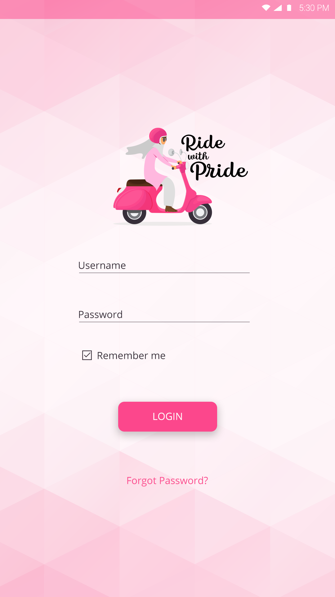
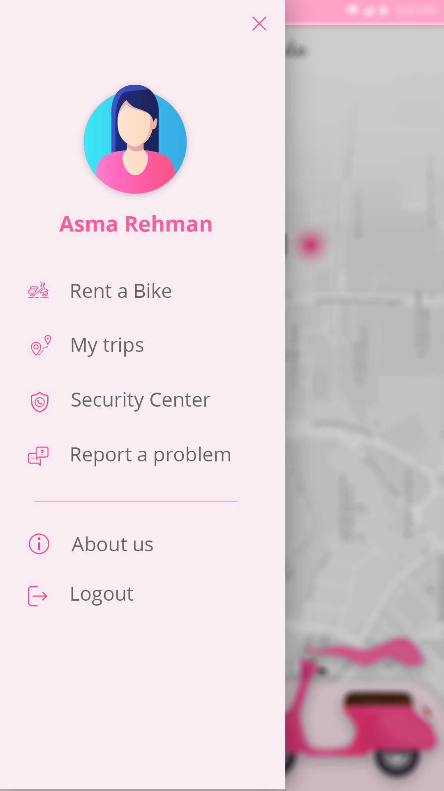

Ride with Pride
Mobile Application for Female Student Transportation
An initiative by the University of Central Punjab aimed at revolutionizing the way female students commute. A customized mobile application making commute safer and convenient for the girls of UCP by including features such as tracking the journey, help, and much more.
Challenge
It is difficult for girls in Pakistan, a conservative country, to travel and commute independently. A survey suggested that 51% of the female population is dependent when it comes to easy, safe, reliable and efficient commute. Whether it is for acquiring education or completing everyday tasks, most ladies still depend on the males in their lives.
The challenge for the University of Central Punjab (UCP) was to address the commute issues faced by the female population in order for them to become independent and commute to the university as well as perform other important tasks on their own.
Discussion & Solution
An initiative by the University of Central Punjab aimed at revolutionizing the way the female students of UCP commute. Based on the provision of modern, sophisticated, and trendy two-wheelers (pink scooters), that makes booking a bike as easy as issuing a library book free of cost.
The customized application allows the users to scan the QR code in order to book the bike, view the check-in and check-out as well as the previous and current journey details, report a problem or contact the security center, and much more.
In regards to addressing the security concerns held by the parents, a track journey feature was also included in the app for the parents to track the journey of their child and stay updated on the whereabouts.
Screens


